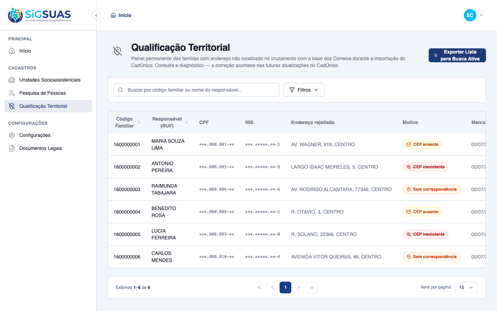
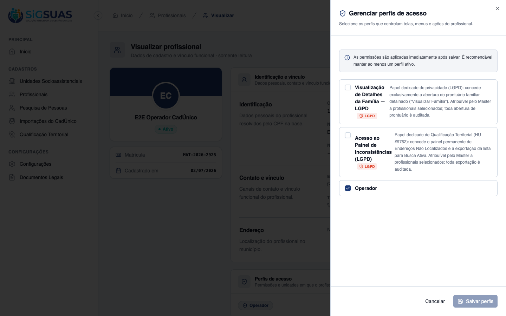

Relatório de Critérios de Aceite — Controle de Acesso ao Painel de Inconsistências (LGPD)
Resumo
HU #9764: 6 Critérios de Aceite evidenciados — CA06 (menu oculto sem permissão), CA07 (revogação com efeito imediato), CA-extra-A (concessão habilita no request seguinte) e CA-extra-B (Master gerencia e sempre acessa) demonstrados ao vivo no navegador com duas sessões simultâneas; CA-extra-C (isolamento territorial da concessão) e CA-extra-D (inativação bloqueia de imediato) cobertos pela suíte automatizada. O drawer de perfis exibe o papel "Acesso ao Painel de Inconsistências (LGPD)" com selo vermelho LGPD e descrição da finalidade. Suíte: 45 testes, 186 assertions, 100% verdes. Resultado geral: todos os critérios atendidos.
| CA | Critério | Status |
|---|---|---|
| CA06 | Bloqueio de acesso por falta de permissão (RN05) | ATENDIDO · navegador |
| CA07 | Revogação de acesso imediata (RN05/RN08) | ATENDIDO · navegador |
| CA-extra-A | Concessão habilita o acesso (RN05) | ATENDIDO · navegador |
| CA-extra-B | Master gerencia e sempre acessa (RN08) | ATENDIDO · navegador |
| CA-extra-C | Isolamento territorial da concessão (RN07) | ATENDIDO · automatizado |
| CA-extra-D | Inativação bloqueia de imediato (RN08) | ATENDIDO · automatizado |
CA06 — Bloqueio de acesso por falta de permissão (RN05) ATENDIDO · navegador
Critério (Gherkin): Dado que sou Operacional do Tenant e o Master NÃO me concedeu o "Acesso ao Painel de Inconsistências" Quando realizo login na Área do Cliente Então o menu/botão de acesso à tela de Qualificação Territorial não é exibido para mim
Como foi testado: Operador E2E sem o papel territorial_qualifier autenticado na Área do Cliente (estado pós-revogação do CA07 — mesmo estado de quem nunca recebeu).
- A sidebar do Operador NÃO exibe o item "Qualificação Territorial" (gate por address-inconsistencies.index).
- Acesso direto por URL cai na página 403 (evidenciado também no dossiê do #9762, CA-extra-C).

CA07 — Revogação de acesso imediata (RN05/RN08) ATENDIDO · navegador
Critério (Gherkin): Dado que o Master acessa a gestão de equipes e desmarca minha permissão de acesso ao painel Quando eu (pelo meu Usuário único logado) tento forçar a entrada na tela Então o sistema nega o carregamento dos dados E exibe um alerta de acesso restrito
Como foi testado: Com o Operador logado e o painel ABERTO em outra sessão, o Master desmarca "Acesso ao Painel de Inconsistências (LGPD)" no drawer e salva. O Operador recarrega a página do painel (novo request, sem logout).
- O request seguinte à revogação recebe 403 do backend: nenhum dado é carregado e o sistema exibe a tela de acesso negado ("403 — Acesso negado — Você não tem permissão para acessar esta página").
- O client re-sincroniza /auth/me ao receber o 403 — o menu "Qualificação Territorial" desaparece da sidebar imediatamente (sem depender de logout).
- A decisão é do backend a cada request (cache do frontend nunca é a autoridade) — RN08.

CA-extra-A — Concessão habilita o acesso (RN05) ATENDIDO · navegador
Critério (Gherkin): Dado que sou Master e atribuo ao Profissional o papel de acesso ao painel Quando salvo a alteração Então o Profissional, no próximo request, vê o menu e carrega o painel com sucesso (200)
Como foi testado: Master marca "Acesso ao Painel de Inconsistências (LGPD)" no drawer do profissional e salva (toast de sucesso). O Operador loga e acessa o painel.
- No request seguinte, o Operador vê o menu "Qualificação Territorial" na sidebar e o painel carrega com sucesso (200): 6 famílias listadas com CPF/NIS mascarados.
- O botão "Exportar Lista para Busca Ativa" também aparece (o papel territorial_qualifier carrega .index + .export).

CA-extra-B — Master gerencia e sempre acessa (RN08) ATENDIDO · navegador
Critério (Gherkin): Dado que sou Master Quando acesso a Qualificação Territorial Então vejo o painel (permissão semeada no papel master) e posso conceder acesso a outros
Como foi testado: Master acessa o painel (evidências do dossiê #9762/#9763) e abre o drawer "Gerenciar perfis de acesso" do profissional.
- Master acessa o painel e exporta sem necessitar do papel add-on: as permissões restritas são semeadas diretamente no papel master (preservadas entre execuções do permissions:sync — testado).
- O drawer exibe o papel "Acesso ao Painel de Inconsistências (LGPD)" com selo vermelho LGPD e a descrição: painel de Endereços Não Localizados + exportação para Busca Ativa; atribuível pelo Master; toda exportação auditada.
- Os dois papéis add-on LGPD da feature (family_viewer e territorial_qualifier) convivem no mesmo drawer, cada um com seu selo.

CA-extra-C — Isolamento territorial da concessão (RN07) ATENDIDO · automatizado
Critério (Gherkin): Dado que concedo o acesso a um Profissional no Tenant A Quando o mesmo Usuário atua no Tenant B sem o papel lá Então ele não vê nem carrega o painel no Tenant B
Como foi testado: Coberto pela suíte automatizada (apêndice): papel concedido no Tenant A; requests autenticados no Tenant B.
- As checagens do gate são tenant-scoped via user_tenant_role — papel do Tenant A não habilita index/export no Tenant B (403).
- O usuário global permanece válido nos demais tenants.
Evidência por cobertura automatizada — ver Anexo.
CA-extra-D — Inativação bloqueia de imediato (RN08) ATENDIDO · automatizado
Critério (Gherkin): Dado um Operador com acesso ao painel Quando o Master o inativa como Profissional do município Então o acesso ao painel é negado no próximo request E seu Usuário global continua válido em outros tenants
Como foi testado: Coberto pela suíte automatizada (apêndice): o enforcement exige vínculo de Profissional ATIVO no tenant além do papel (mesmo predicado do prontuário #9760).
- Profissional inativado recebe 403 no request seguinte no index e no export, mesmo mantendo o papel.
- Usuário global preservado em outros tenants.
Evidência por cobertura automatizada — ver Anexo.
Anexo — Cobertura automatizada (Pest, --filter=AddressInconsistency) — 45 passed, 186 assertions (inclui concessão/revogação/inativação/isolamento e o gate tenant-scoped de index+export)
PASS Tests\Unit\Models\FamilyAddressInconsistencyTest ✓ it uses tenant scope, soft deletes, HasUuid and LogsActivity 0.39s ✓ it casts status/failure_reason to enums and defaults status to open 0.01s ✓ it generates a uuid on create and resolves route by uuid 0.08s ✓ it relates to family, address and both imports 0.01s ✓ it hydrates the resolved factory state 0.03s ✓ it never logs the rejected address text in the activity log (LGPD) 0.01s ✓ it enforces one open inconsistency per (tenant, family) via partial… 0.03s PASS Tests\Unit\Services\AddressInconsistencyExportServiceTest ✓ it builds the CSV row with the 5 RN04 columns in the spec order 0.02s ✓ it renders missing phone and nulls as empty strings (RN04) 0.01s ✓ it quotes only fields containing separator, comma, quotes or line b… 0.01s ✓ it prefixes an apostrophe on fields starting with a formula-trigger… 0.01s ✓ it does not alter fields without a leading formula-trigger char 0.02s ✓ it exposes the pt-BR spreadsheet format constants (BOM UTF-8, semic… 0.01s ✓ it records the export audit with masked causer CPF and no raw PII (… 0.02s ✓ it does not throw when the audit write fails — logs a technical err… 0.02s PASS Tests\Feature\Api\Client\AddressInconsistencyAccessTest ✓ it denies the panel to the base operator without the dedicated role… 0.07s ✓ it grants panel + export on the next request when the Master assign… 0.06s ✓ it blocks with 403 on the request right after the Master revokes th… 0.06s ✓ it lets the Master always view, export and manage the panel (CA-ext… 0.03s ✓ it offers the role as assignable in the drawer with the LGPD label… 0.04s ✓ it does not let a grant in Tenant A open the panel in Tenant B (CA-… 0.05s ✓ it blocks immediately when the professional is inactivated, keeping… 0.05s PASS Tests\Feature\Api\Client\AddressInconsistencyExportTest ✓ it downloads a CSV with BOM, semicolon and the 5 RN04 columns in or… 0.05s ✓ it neutralizes CSV formula injection in free-text fields without al… 0.04s ✓ it leaves the phone column empty when the family has no contact pho… 0.05s ✓ it quotes fields containing the separator and skips resolved incons… 0.05s ✓ it records exactly ONE audit line per download with causer, datetim… 0.04s ✓ it applies the same filters as the panel and audits them (RN04/RN06… 0.04s ✓ it denies the export without the .export permission — even holding… 0.05s ✓ it exports only families of the active tenant (CA-extra-C/RN07) 0.05s PASS Tests\Feature\Api\Client\AddressInconsistencyPanelTest ✓ it lists Código Familiar, RUF name and rejected address for open in… 0.04s ✓ it always masks CPF and NIS on screen (CA03/LGPD) 0.04s ✓ it shows only open inconsistencies (resolved leave the panel — RN01… 0.05s ✓ it filters by failure_reason and searches by family code or RUF nam… 0.05s ✓ it denies access without the address-inconsistencies.index permissi… 0.03s ✓ it isolates the panel by tenant (CA-extra-D / RN07) 0.05s ✓ it seeds the dedicated role with the restricted permissions and gra… 0.03s ✓ it keeps the permission away from the base operador and preserves t… 1.04s ✓ it is a read-only resource: no write routes are registered (RN03) 0.02s PASS Tests\Feature\Services\Cadunico\CadunicoSyncAddressInconsistencyTest ✓ it flags the family as open inconsistency when the CEP is missing (… 0.10s ✓ it flags cep_not_found when the CEP does not exist in the DNE base… 0.10s ✓ it accumulates new failures over previous batches (CA02: 50 + 10 =… 0.50s ✓ it resolves the open inconsistency when a future import fixes the a… 0.09s ✓ it does not duplicate the open row when the same family fails again… 0.08s ✓ it never breaks the sync when the checker fails internally (regress… 0.07s Tests: 45 passed (186 assertions) Duration: 4.15s